Welcome to the Kisekae Archive Manager program documentation. The Archive Manager menu provides a standard drop down list of commands for all archive functions.
New archive files are created from the New menu on the Archive Manager main program screen. New archive files are initially empty and file elements can be added to the empty archive file with the Edit-Add command. Figure 1 shows a create archive file dialog screen for new archive files. The new file name must be entered and it must have an archive file type extension.
Empty LZH files created with this command will exist when the file is closed. Empty ZIP and JAR files are not retained on close.
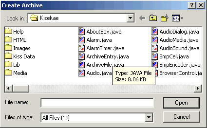
Figure 1. Create Archive
The Open command is used to open an existing archve file of an LZH, ZIP, or JAR type recognized by the Kisekae UltraKiss program.
Figure 2 shows a standard Microsoft Windows file Open dialog. The file Open dialog can be used to select any file. If the selected file is of a recognized archive type then the file will be opened. If the file type is not recognized then an error message will be displayed.
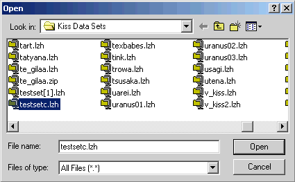
Figure 2. Open Dialog
The example in Figure 2 selected the archive file TESTSETC.LZH. When an archive file is opened the Archive Manager will display a selection list of elements found within the archive. These elements can be of any type. Figure 3 shows the Archive Manager screen after the file TESTSETC.LZH has been loaded.
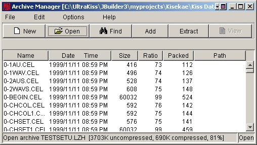
Figure 3. Archive Manager Screen
The Close command is used to close the currently active archive file. When a file is closed the Archive Manager will display an inactive screen as shown in Figure 4.
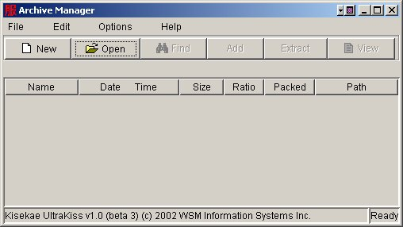
Figure 4. Archive Manager Inactive Screen
The Copy command creates a new archive file with the specified name and writes all archive elements from the active archive file into this new file. The new archive file can be of any supported archive type. The Copy command is used to convert an archive file from one file type to another, or to copy a file from one file name to another.
Figure 5 shows the archive file copy dialog. The new file name must be entered and it must have an archive file type extension. It is not possible to copy an archive file to a non-archive type file.
When the copy is complete the original archive file is closed and retained on disk. The Archive Manager will now reference the new archive file.
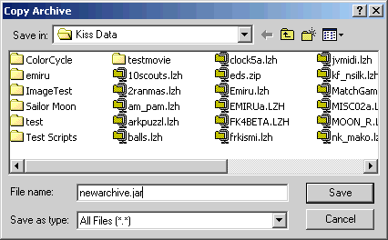
Figure 5. Copy Archive
The Rename command behaves exactly like the File-Copy command except that the original archive file is deleted after the copy is complete. The Archive Manager will be opened to the renamed archive file.
The File Delete command is used to delete the active archive file. The prompt dialog shown in Figure 6 is displayed to confirm the deletion operation. If the deletion is cancelled nothing is done. If the deletion is acknowledged then the file is deleted and the Archive Manager will display an inactive screen as shown in Figure 4.
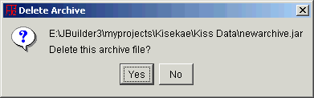
Figure 6. File Deletion Prompt
The Exit command closes any loaded archive file and terminates the Archive Manager program.
The Add command instructs the Archive Manager to add new file elements to the archive. The Add screen is shown in Figure 7. Under normal circumstances you would simply select a file element and add this to the archive file, replacing any existing element of the same name within the archive. For further information and a detailed description of the Add screen options, see the Add Functions document.
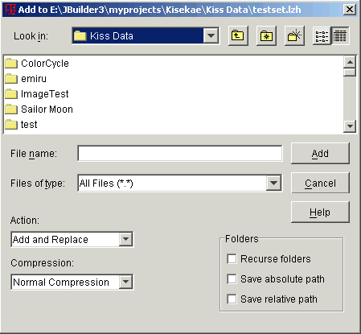
Figure 7. Add Screen
The Extract command instructs the Archive Manager to extract file elements from the archive into a file directory. The Extract screen is shown in Figure 8. Under normal circumstances you would simply extract all file elements from the archive and write them into a file directory, replacing any existing element of the same name. For further information and a detailed description of the Extract screen options, see the Extract Functions document.
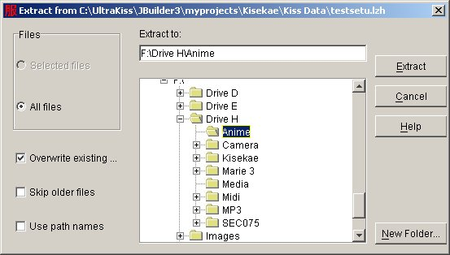
Figure 8. Extract Screen
Elements selected for extraction are identified by left clicking on the element line within the archive element list. Multiple elements can be selected by holding the Ctrl key down while selecting a new element. A series of elements can be selected by selecting the first element, then holding the Shift key down as another element further down in the list is selected. Elements can be unselected by Ctrl clicking on a selected element. Figure 9 shows selected elements within an archive element list.
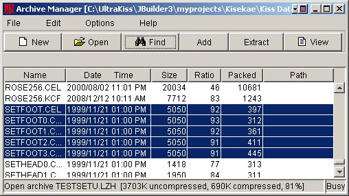
Figure 9. Selected Archive Elements
The Edit Delete command is used to delete selected elements from the archive file. This command is not the same as the File-Delete command that is used to delete the complete archive file.
Elements selected for either deletion are identified by left clicking on the element line within the archive element list. Multiple elements can be selected by holding the Ctrl key down while selecting a new element. A series of elements can be selected by selecting the first element, then holding the Shift key down as another element further down in the list is selected. Elements can be unselected by Ctrl clicking on a selected element. Figure 9 shows selected elements within an archive element list.
To delete the selected elements use either the Edit-Delete command or press the Delete key. A file deletion prompt as shown in Figure 6 will request confirmation of the deletion operation. If the deletion is acknowledged then the archive file is rewritten to exclude the selected elements. On completion of the write the Archive Manager will display an updated element list for the active archive file.
The View command instructs the Archive Manager to extract the first selected element from the archive element list and invoke the appropriate editor tool for the element. Text files and KiSS configuration files are loaded into the Text Editor. Image files are loaded into the Image Editor. KiSS palette files are loaded into the Color Editor. Sound files and movie files are loaded into the Media Player.
If the file is of a type not recognized by UltraKiss then a prompt will ask if the file should be viewed as a text file. All files will default to a text view if the Archive Manager View As Text option is set.
The View command is automatically invoked if an element in the archive list is double clicked.
The Find edit command is used to find elements of a particular type or name within the archive file element list. Figure 10 is an example of the Find dialog screen.
When entering search names the wildcard character (*) can be used to select names that match a partial search pattern. Wildcards can be used as name prefixes or name suffixes for either the file name or file extension. For example, the pattern 'set*' will find all element names beginning with the characters 'set'. The pattern '*set' will find all element names ending with the characters 'set'. A stand alone wildcard character can be used to match with any name or extension.
Figure 10. Find Element
The Find button is used to find the first occurrence of the name pattern. The search begins from the current location in the archive element list. The Find All button searches for all names in the archive that match the pattern. All matching names will be selected. The OK button closes the Find dialog screen. All selected elements remain selected on close.
The path drop down selection box is used to restrict the search to archive elements with a specified path name. If no path name is specified then the search is unrestricted. The Archive Manager retains absolute or relative path names for files in the archive if the Save Relative Path or Save Absolute Path option is set when files are added to the archive. If an archive file contains path names then the Path drop down selection box will list all unique path names found within the archive. Figure 11 illustrates an example archive file with relative path names.
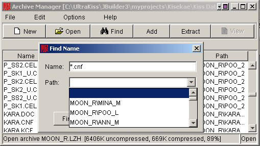
Figure 11. Find Element Path
The Select All command is used to select all archive element names in the archive list. This command is useful for selecting all elements in the archive for extract, or for selecting all elements and then unselecting only those elements not required for extract.
The Select All command is used to unselect all archive element names in the archive list.
The Sort option is a pop-down selection list that is used to identify the primary sort column for ordering the archive element list. Figure 12 shows the sort menu selection for an Archive Manager screen. The unsorted option lists the archive elements in the order in which they were written in the archive file. Sorting by Name, Date, uncompressed Size, compression Ratio, compressed or Packed size, or by a Path name and name combination is possible.
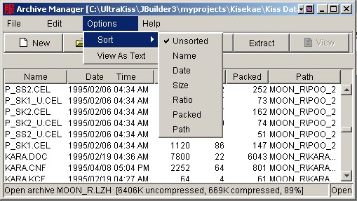
Figure 12. Sort Selection
The archive element display can also be sorted by column if the column headings are clicked. Clicking once will sort the column in an ascending sequence. Clicking on the column again will invert the sort order.
The View As Text option, if set, forces all element View operations to use the Text Editor for viewing the file contents.
The Contents command invokes the Archive Manager online help system. Access to all product documentation is available. The online help system provides a complete index and navigation system to various topics of interest.
The About command shows a standard program information dialog that provides copyright and program version information. Figure 13 show an example of the Kisekae UltraKiss program About dialog.

Figure 13. About Dialog
Next Document: Toolbar Commands
Prior Document: Archive Manager Introduction
Copyright (c) 2002-2023 William Miles